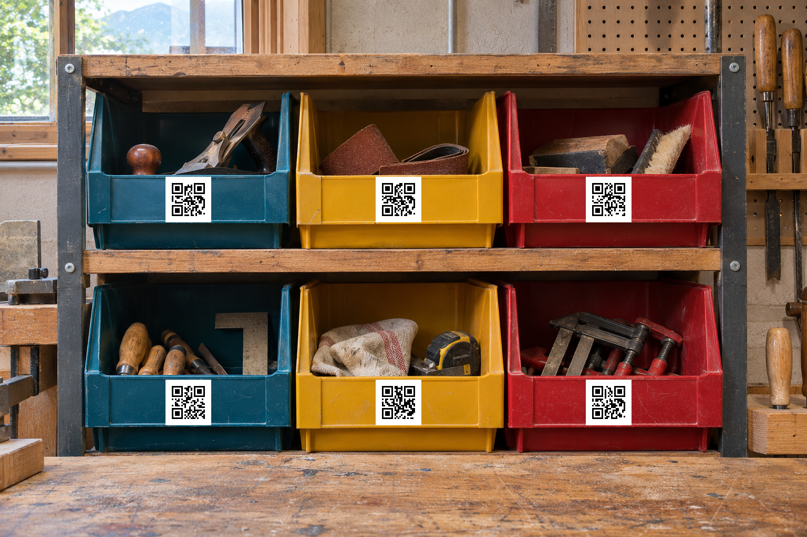

Werkstatt-Suche
Finde das richtige Fach.
Werkzeug auswählen und das Regal fotografieren. Fachfinder erkennt die QR-Markierung und zeigt, ob du vor dem richtigen Fach stehst.
Schritt 2
Regalfoto prüfen

BeispielregalBereit
Die Bildanalyse läuft lokal im Browser.
Schritt 1
Werkzeug wählen
Abgleich
Werkzeug wählen
Das passende Fach erscheint, sobald du ein Werkzeug auswählst.
Eigenes Inventar importieren
Verwende die CSV-Vorlage und die Fächer A-01 bis B-03. Der Import ersetzt deine aktuelle Liste erst nach der Bestätigung.
Das Beispielinventar ist aktiv.
Letzte Bestätigungen
Deine Bestätigungen erscheinen hier.